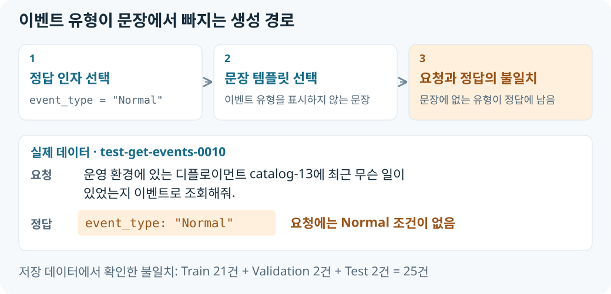

이벤트 유형을 정답에 먼저 넣고, 그 유형을 언급하지 않는 문장 템플릿을 선택할 수 있는 것이 원인이었습니다. 학습 후 저장된 데이터와 생성 코드를 대조해 해당 경로에서 만들어진 라벨 25건과 검증 조건의 누락을 확인했습니다.
정답과 문장 템플릿의 불일치
get_events()는 event_type을 먼저 무작위로 고르고 정답 args에 넣습니다. 그 뒤 문장 템플릿을 고르는데, 일부 템플릿에는 그 유형을 표시할 {t}가 없습니다. 이 경로에서는 사용자 문장에 “정상/경고/Normal/Warning”이 전혀 없는데 정답은 특정 유형을 요구하게 됩니다.

저장된 데이터에서 확인한 25건
저장된 JSONL에서 이 경로로 생성된 레코드 25건을 확인했습니다.
| Split | get_events 전체 |
유형을 말하지 않았는데 정답이 event_type을 요구한 행 |
|---|---|---|
| Train | 160 | 21 |
| Validation | 20 | 2 |
| Test | 20 | 2 |
| 합계 | 200 | 25 |
Test의 두 실제 사례는 다음과 같습니다.
| Case ID | 사용자 문장 | 정답에 추가된 조건 |
|---|---|---|
test-get-events-0007 |
“report-worker-10에 생긴 사건을 Kubernetes 이벤트로 확인해줘. 위치는 운영계, 종류는 디플로이먼트?” | event_type: "Normal" |
test-get-events-0010 |
“운영 환경에 있는 디플로이먼트 catalog-13에 최근 무슨 일이 있었는지 이벤트로 조회해줘.” | event_type: "Normal" |
두 문장의 “디플로이먼트”는 리소스 종류를 뜻하며, 이벤트 유형 Normal을 지정한 표현이 아닙니다. “사용자가 말한 옵션만 포함”이라는 정답 규칙에 따르면 이 정답은 일관되지 않습니다.
Schema 검사를 통과한 이유
기존 데이터 검증기는 수량·중복·Schema·namespace 의미·이벤트의 resource kind/name 쌍·previous 값을 확인하지만, 사용자 문장에 event_type이 실제로 등장했는지는 검사하지 않습니다. 이번에 이 검증기를 실행한 결과 1,000건 모두 통과했습니다. 이벤트 유형의 언급 여부가 검사 조건에서 빠져 있어 이 25건도 통과했습니다.
이 25건은 “말하지 않은 인자를 추가하지 않는다”는 학습 목표와 충돌합니다. 채점기는 정답 dict와의 일치를 요구하므로, 해당 레코드에서 event_type을 생략한 응답은 인자 exact-match 실패로 처리됩니다.
생성기와 검증기의 수정 지점
Train·Validation 파일의 체크섬은 저장된 학습 manifest와 일치합니다. 이 분석에서는 현재 저장된 데이터의 불일치 원인을 확인하고 다음 두 지점을 수정 대상으로 정리했습니다.
- 생성기: 정답에 이벤트 유형을 넣는 경우 사용자 문장에도 해당 유형이 드러나도록 템플릿과 연결
- 검증기: 사용자 문장과 정답의 이벤트 유형 조건이 일치하는지 검사
현재 저장소에는 해당 생성 경로와 데이터가 남아 있습니다. 소개글의 33건 성과는 기존 학습 모델의 응답이며, 위 두 지점의 수정·재학습 결과가 아닙니다.
근거: Test 데이터, Train 데이터, Validation 데이터.